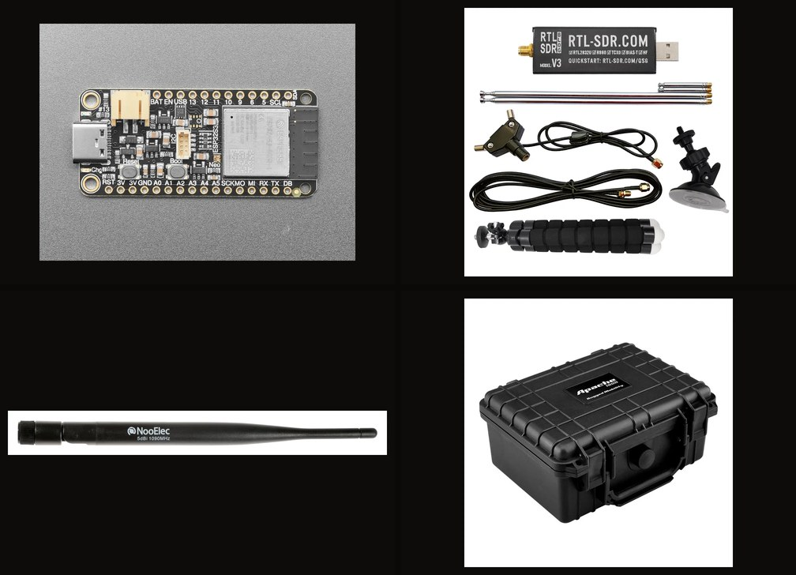
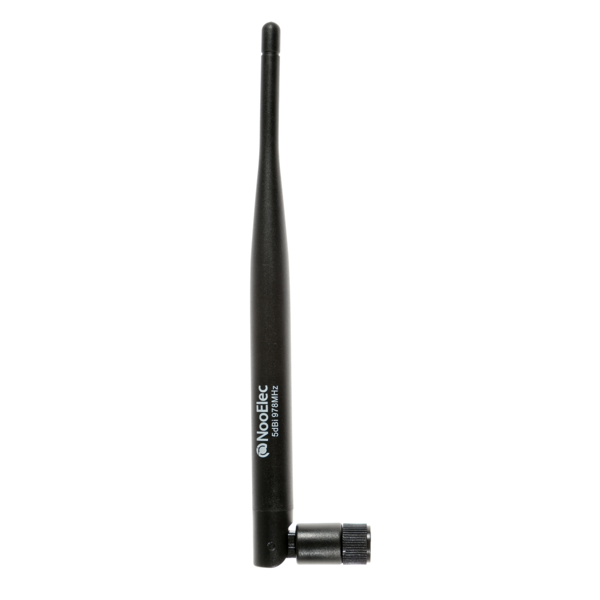
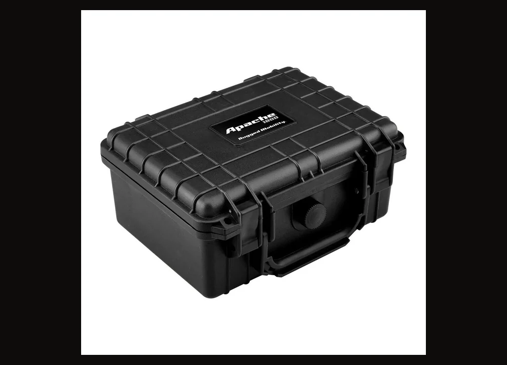

Home / Detection & Field Gear / ADS-B + Remote ID receiver kit
Detection & Field Gear · Kit
ADS-B + Remote ID Receiver Kit
$199 / $259 Hardware Only / Ready-to-Run
Hardware Only
$199
The kit as the shop ships it. You load the listener image.
Ready-to-Run
$259
Same hardware. We load the listener image before it ships.
Firmware on the board. Extra business day. Ships from us after we load it.
- Remote ID receive board plus a V3-class listen radio and dipole
- 1090 MHz SMA whip and 978 MHz SMA whip
- Small weatherproof hard case with pick-and-pluck foam
- No Raspberry Pi. No SAW filter. Not Fusion Sensor. Not V4
- USB powered. No battery. Receive only
Hardware Only ships from US shops after payment. Ready-to-Run ships from us after we load the listener image. Sold by Dark Sky Systems LLC. Receive only. Card via Stripe. We do not store it.